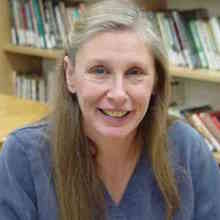

Clinicians and Directors
William R. Bauer
Musical Movement Class: Dalcroze movement

Carlough Faulkner-Carroll
Violin

Kathy McHugh
Violin

Beth Guerriero Ph.D.
Violin/Viola
Abigail McHugh-Grifa
Cello
Nancy Modell
Piano and Every Child Can! Course
Rebekah Waggoner
Piano
Heather Lardin
Bass